For our example model DocumentTriageExample.xpdl we create two processes, one for Document Rendezvous waiting for incoming Documents, and one for the Document Triage, containing the predefined UI Mashup activity for indexing.
You find the complete example model DocumentTriageExample.xpdl as well as model
DocumentRequestPredefined.xpdl containing the predefined structured data type
in the all-tutorials.zip file in the document-triage/src/main/resources folder.
To make the predefined structured data type, which is required for our Document Triage, available, import the DocumentRequestPredefined.xpdl model from the all-tutorials.zip file.
The usage of this predefined model is described in detail in section Predefined Document Request Model Structure of chapter Triaging Documents in the End User Handbook.
Do not forget to adjust the server base URL in the Default Value entry field of the serverBaseUrl configuration variable of the predefined model.
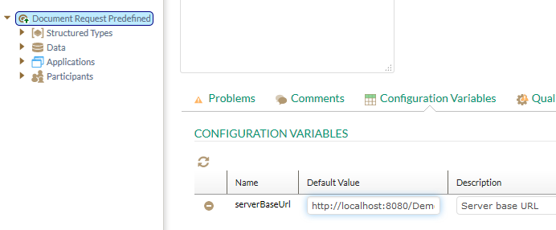
Figure: Enter Server Base URL
To create the example Document Triage model, create the following data type and data:
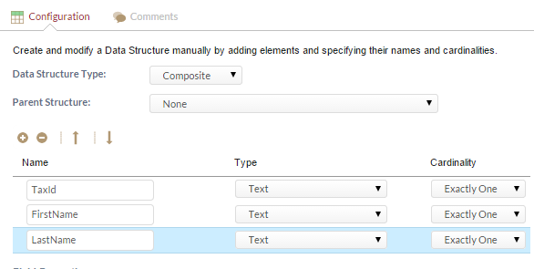
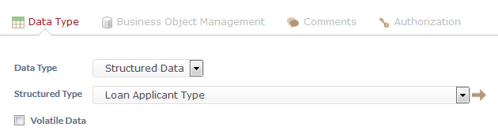
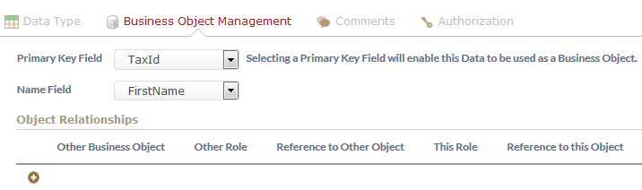
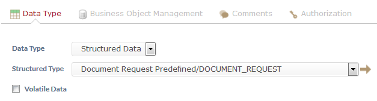
For details on defining structured data as Business Objects refer to chapter Specifying Structured Data as Business Object in the Business Process Modeling Handbook.
Add a simple document triage process Document Triage:
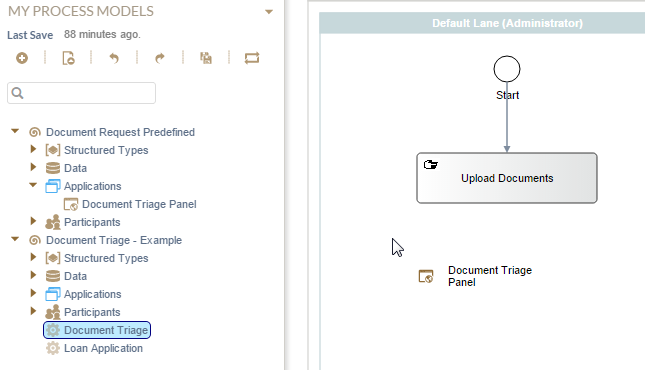
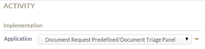
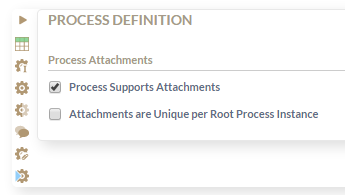
The process now looks similar to the following:
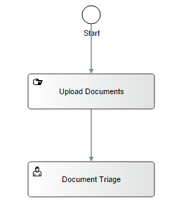
Figure: Example Document Upload process
Now we create process Loan Application for invoking a Document Rendezvous. We use a Script task for easier reading of Document Request data. Prepare the workflow as follows:
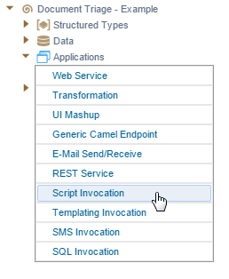
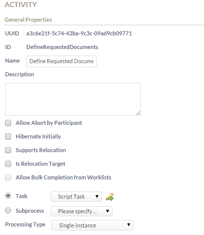
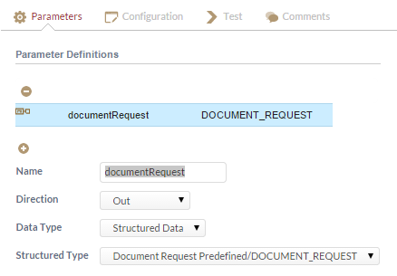
documentRequest = {Documents: [{
Name : "ID",
Exists : false,
Accepted : false,
Required : true,
DocumentLocation : "",
IsAttachment : false,
IsTemplate : false,
ConvertToPDF : true,
DocumentID : "",
DocumentType : "",
Comment : "",
ACL : ""
}, {
Name : "PaySlip",
Exists : false,
Accepted : false,
Required : true,
DocumentLocation : "",
IsAttachment : false,
IsTemplate : false,
ConvertToPDF : true,
DocumentID : "",
DocumentType : "",
Comment : "",
ACL : ""
}]}
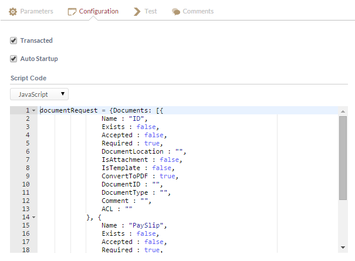
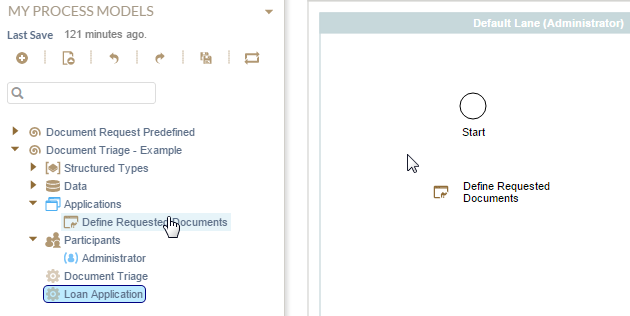
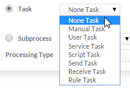
DocumentRendezvous,
e.g. DocumentRendezvous_Loan. Do not include spaces in the ID!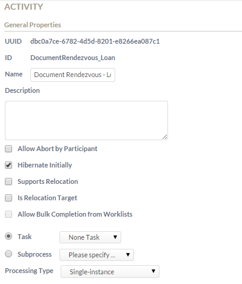
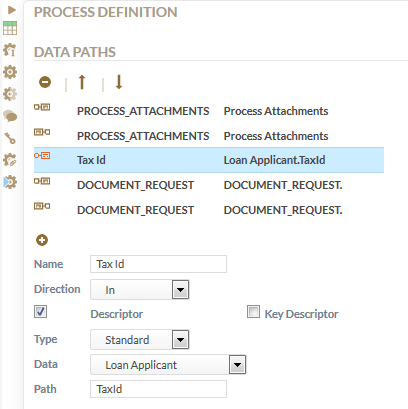
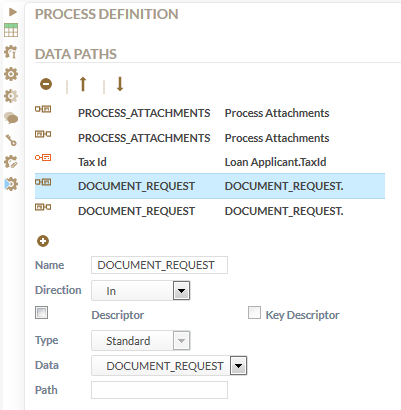
The following screenshot shows the example Document Rendezvous process for Loan application:
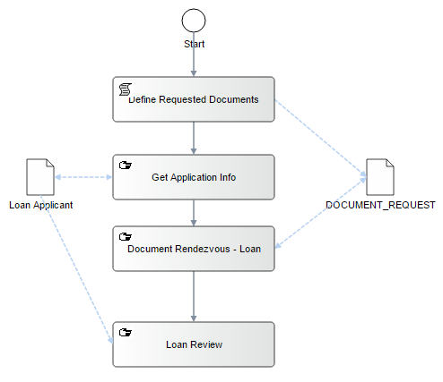
Figure: Loan Application Example Workflow
For details on the Document Rendezvous concept in general, please refer to chapter Document Rendezvous in the Stardust Concepts Document Rendezvous in the Concepts part.